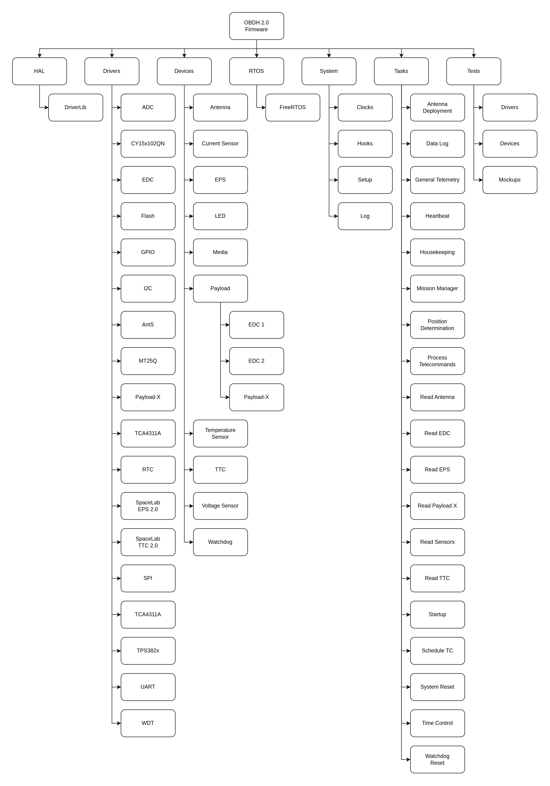
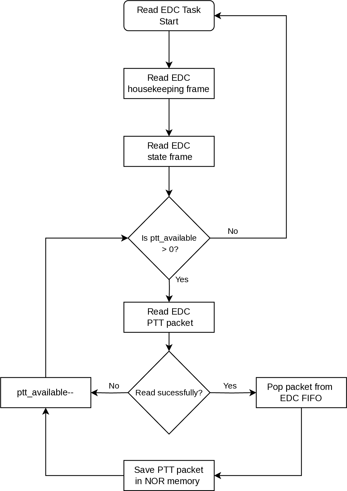
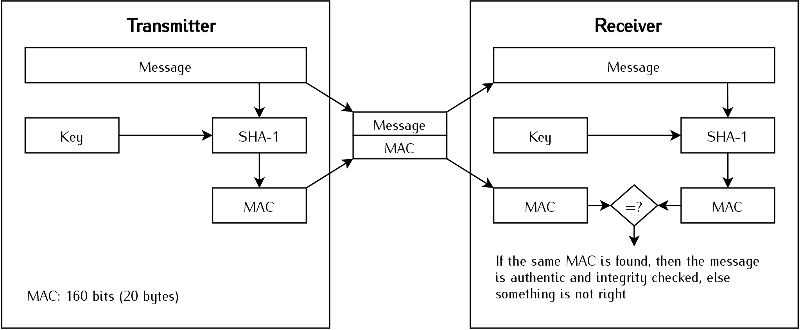

Firmware
Product tree
The product tree of the firmware part of the OBDH 2.0 module is available in Fig. 28.

Fig. 28 Product tree of the firmware of the OBDH 2.0 module.
Dependencies
The firmware depends on external libraries to access the embedded hardware or to communicate with other modules. A list of these libraries and the used version is available in Table 10.
Library |
Version |
|---|---|
MSP430 DriverLib |
v2.91.11.01 |
FreeRTOS |
v10.2.1 |
Tasks
A list of the firmware tasks can be seen in the Table 11. A complete description of them is provided below.
Name |
Priority |
Initial delay [ms] |
Period [ms] |
Stack [bytes] |
|---|---|---|---|---|
Antenna deployment |
Highest |
0 |
Aperiodic |
150 |
Antenna reading |
Medium |
5000 |
60000 |
150 |
Data log |
Medium |
3005000 |
600000 |
225 |
General Telemetry |
High |
15000 |
60000 |
225 |
EDC reading |
Medium |
5000 |
60000 |
300 |
EPS reading |
Medium |
5000 |
60000 |
384 |
Heartbeat |
Lowest |
2000 |
500 |
160 |
Housekeeping |
Medium |
5000 |
60000 |
225 |
Mission Manager |
High |
5000 |
Aperiodic |
512 |
Payload X reading |
Medium |
5000 |
60000 |
300 |
Position Determination |
Low |
3000 |
60000 |
1024 |
Read sensors |
Medium |
5000 |
60000 |
140 |
Startup (boot) |
Highest |
0 |
Aperiodic |
350 |
Schedule TC |
Low |
0 |
1000 |
1024 |
System reset |
Medium |
0 |
36000000 |
128 |
Telecommand processing |
High |
16500 |
1000 |
1024 |
Time control |
High |
1000 |
1000 |
128 |
TTC reading |
Medium |
15500 |
60000 |
384 |
Watchdog reset |
Lowest |
0 |
100 |
150 |
Antenna deployment
This task deploys the Antenna module at the start of the mission. It basically implements the previously shown antenna deploy routine flowchart in Fig. 7.
Antenna reading
This task initializes the antenna device and reads the antenna housekeeping data, which includes deployment status. It also stores the reading timestamp together with housekeeping data.
Data log
This task saves the all subsystems last read housekeeping data to flash memory. Since there is no proper file system to manage the memories each subsystem got a predetermined number of flash pages to write in a ring buffer fashion. The address and page numbers for each subsystem can be seen in firmware/config/config.h from [3].
General Telemetry
The General Telemetry task transmits a data package containing the satellite’s basic telemetry data every 60 seconds. The complete content of the packet can be seen at Table 24. The transmission is controlled through a flag on the OBDH parameters (see Table 13), accessible through telecommands.
EDC reading
This task reads the state and housekeeping EDC frames, if there are available PTT packets on EDC’s FIFO, it also attempts to read them. After every sucessfull PTT packet read the data is stored in flash memory, following the same scheme described in Data log. A flowchart of how the data collection procedure works can be seen in Fig. 29.
{kind=link}

Fig. 29 EDC reading procedure flowchart.
EPS reading
This task initializes the EPS device and reads the EPS housekeeping data. The communication with EPS has a simple retry scheme, basically the task will attempt to resend the command five times, after five consecutive errors it goes to the next operation.
Heartbeat
The heartbeat task keeps blinking a LED (“System LED” in Fig. 10) at a rate of 1 Hz during the execution of the system. Its purpose is to give visual feedback on the execution of the scheduler. This task does not have a specific purpose on the flight version of the module (the flight version of the PCB does not have LEDs).
Housekeeping
This task saves the OBDH data parameters to FRAM every 60 seconds. It also keep track of hibernation duration and timeouts, notifying the Mission Manager task in case of a timeout.
Mission Manager
This task controls all mission specific behavior, specially payload control. After task creation Mission Manager will attempt to restore the satellite state from the previous boot through the OBDH parameters, making sure the operation is consistent through boots. The task has an Event Queue implemented using the FreeRTOS Queue, in which the task blocks waiting for event notifications, this way the task does not waste any compute time while idle. The implemented events can be seen in Table 12.
Name |
Description |
ID |
|---|---|---|
Persist State On Init |
Used for the state machine initialization |
0x0000 |
In Brazil |
Satellite’s position is inside brazilian territory |
0x0001 |
Out of Brazil |
Satellite got out of brazilian territory |
0x0002 |
PX Finished |
Payload X finished its experiment |
0x0003 |
Hibernation Timeout |
Notifies that hibernation time has ended |
0x0004 |
Battery Level Critical |
Satellite battery is on critical levels |
0x0005 |
FDIR Resolved |
FDIR condition was resolved |
0x0006 |
Commission Timeout |
Commission Mode timedout |
0x0007 |
Deployment Complete |
Antenna Deployment complete |
0x0008 |
TC Goto Deployment Mode |
Mode change to Deployment mode was requested by TC |
0x8000 |
TC Goto Commission Mode |
Mode change to Commission mode was requested by TC |
0x8001 |
TC Goto Nominal Mode |
Mode change to Nominal mode was requested by TC |
0x8002 |
TC Goto Stand-by Mode |
Mode change to Stand-by mode was requested by TC |
0x8003 |
TC Goto Experiment Mode |
Mode change to Experiment mode was requested by TC |
0x8004 |
TC Goto FDIR |
Mode change to FDIR was requested by TC |
0x8005 |
TC Goto Manual Mode |
Mode change to Manual mode was requested by TC |
0x8006 |
TC Enable Payload |
A request to enable a payload was made by TC |
0x8010 |
TC Disable Payload |
A request to disable a payload was made by TC |
0x8020 |
TC Enter hibernation |
A request to enter hibernation was made by TC |
0x8030 |
TC Leave hibernation |
A request to leave hibernation was made by TC |
0x8040 |
Payload X reading
This task reads Payload X experiment data and status. It only attempts to read data from Payload X if it is active and set as the secondary payload (see Table 13).
Position Determination
This task determines the satellite position based on the satellite’s TLE lines using a library that implements a SGP4 propagator. The TLE lines are provided through telecommands and are expected to by update quite regularly. The task also deals with TLE updates, repopulating the orbital elements and SGP4 variables whenever there is an update.
Read sensors
This task reads the internal sensors of the OBDH. The available readings are: \(\mu\)C temperature, \(\mu\)C current supply and \(\mu\)C voltage supply. The task also updates the sensor reading timestamp parameter.
Startup (boot)
This task is the first executed task when the system starts. All devices, libraries, and data structures are initialized in this task. When the execution is done, the remaining tasks of the system are allowed to execute.
Schedule TC
This task implements the necessary functionality to allow for scheduled execution of telecommands. It manages a telecommand queue, implemented as a min-heap and persisted in the FRAM, that forces the command with the closest execution time (referenced by OBDH’s clock) to be the first item of the queue, allowing the task to dequeue scheduled TCs in order of execution. The task run every second and starts by comparing the next command execution time with the current satellite time, running the telecommand whenever the execution time is reached or otherwise going back to sleep.
Telecommands are enqueued for execution through a dedicated telecommand, see Telecommunication Description for details on this procedure.
System reset
This task resets the microcontroller by software every 10 hours. This can be useful to clean up possible wrong values in variables, repeat the antenna deployment routine (limited to \(n\) times), clean up the RAM, etc.
Telecommand processing
This task processes all the telecommand packets received by the TTC device. The supported telemetry and telecommand packets, for both uplink and downlink, can be seen in Table 14. Also, a description of each telecommand is provided in Telecommunication Description.
Time control
This task is responsible for the time management of the system. At every second, it increments the system time (epoch). Also, it saves the current system time in the non-volatile memory every minute.
TTC reading
This task initializes the TTC device and reads the TTC housekeeping data. Also, it checks for the number of consecutive decoding errors on TTC, if there are more than 5 consecutive errors the task tries to reset the TTC device. This is done to avoid potential issues, such as the radio being stuck in TX mode or memory corruption.
Watchdog reset
This task resets the internal and external watchdog timer every 100 ms. The internal watchdog has a maximum count time of 500 ms, and the external watchdog has a maximum of 1600 ms (see Hardware for more information about the watchdog timers).
To prevent the system to not reset during an anomaly on some task (like an execution time longer than planned), this task has the lowest possible priority: 0.
Variables and Parameters
The internal variables and parameters of the OBDH firmware can be seen in Table 13.
ID |
Name/Description |
Type |
Access |
|---|---|---|---|
0 |
System time in sec. (Unix epoch) |
uint32 |
R/W |
1 |
Temperature of the \(\mu\)C in Kelvin |
uint16 |
R |
2 |
Input current in mA |
uint16 |
R |
3 |
Input voltage in mV |
uint16 |
R |
4 |
Last reset cause: |
uint8 |
R |
- 0x00 = No interrupt pending |
|||
- 0x02 = Brownout (BOR) |
|||
- 0x04 = RST/NMI (BOR) |
|||
- 0x06 = PMMSWBOR (BOR) |
|||
- 0x08 = Wakeup from LPMx.5 (BOR) |
|||
- 0x0A = Security violation (BOR) |
|||
- 0x0C = SVSL (POR) |
|||
- 0x0E = SVSH (POR) |
|||
- 0x10 = SVML_OVP (POR) |
|||
- 0x12 = SVMH_OVP (POR) |
|||
- 0x14 = PMMSWPOR (POR) |
|||
- 0x16 = WDT time out (PUC) |
|||
- 0x18 = WDT password violation (PUC) |
|||
- 0x1A = Flash password violation (PUC) |
|||
- 0x1C = Reserved |
|||
- 0x1E = PERF peripheral/configuration area fetch (PUC) |
|||
- 0x20 = PMM password violation (PUC) |
|||
- 0x22 to 0x3E = Reserved |
|||
5 |
Reset counter |
uint16 |
R |
6 |
Last valid telecommand (uplink packet ID) |
uint8 |
R |
7 |
Hardware version |
uint8 |
R |
8 |
Firmware version (ex.: “v1.2.3” = 0x00010203) |
uint32 |
R |
9 |
Operation Mode: |
uint8 |
R/W |
- 0x00 = Deployment |
|||
- 0x01 = Commission |
|||
- 0x02 = Nominal/Normal |
|||
- 0x03 = Stand-by |
|||
- 0x04 = Experiment |
|||
- 0x05 = FDIR |
|||
- 0x06 = Manual |
|||
10 |
Timestamp of the last mode change |
uint32 |
R |
11 |
Mode duration in sec. |
uint32 |
R |
12 |
Initial hibernation executed |
boolean |
R |
13 |
Initial hibernation time counter (minutes) |
uint8 |
R |
14 |
Antenna deployment executed |
boolean |
R |
15 |
Antenna deployment counter |
uint8 |
R |
16 |
Satellite’s latitude in degress |
int16 |
R |
17 |
Satellite’s longitude in degress |
int16 |
R |
18 |
Satellite’s altitude in kilometers |
int16 |
R |
19 |
Last written flash page in OBDH sector |
uint32 |
R |
20 |
Last written flash page in EPS sector |
uint32 |
R |
21 |
Last written flash page in TTC 0 sector |
uint32 |
R |
22 |
Last written flash page in TTC 1 sector |
uint32 |
R |
23 |
Last written flash page in Antenna sector |
uint32 |
R |
24 |
Last written flash page in EDC sector |
uint32 |
R |
25 |
Last written flash page in Payload X sector |
uint32 |
R |
26 |
Last written flash page in SBCD packets sector |
uint32 |
R |
27 |
Hibernation enabled |
boolean |
R/W |
28 |
Main EDC ID (see the system IDs table) |
uint8 |
R/W |
29 |
General telemetry enabled |
boolean |
R/W |
30 |
Reset device (Resets OBDH when “01h” is written into it) |
boolean |
W |
31 |
Timestamp of the last TLE line set update in sec. |
uint32 |
R |
32 |
Timestamp of the last OBDH sensor’s reading in sec. |
uint32 |
R |
33 |
Main payload state (Active payload ID or 0 if disabled) |
uint32 |
R/W |
34 |
Secondary payload state (Active payload ID or 0 if disabled) |
uint32 |
R/W |
35 |
Remaining hibernation time in sec. |
uint32 |
R/W |
36 |
Binary format TLE line |
uint8[50] |
W |
37 |
Timestamp used in the last position determination in sec. |
uint32 |
R |
38 |
Timestamp from the last telecommand reception in sec. |
uint32 |
R |
39 |
Timestamp when commission mode will timeout. |
uint32 |
R |
40 |
Last valid event id that caused an mode transition |
uint16 |
R |
41 |
EPS beacon enabled |
boolean |
R/W |
42 |
Battery critical level threshold in millivolts. |
uint16 |
R/W |
43 |
Experiment enable mode (Automatic = 0 or Manual = 1) |
uint8 |
R/W |
44 |
Reset TC Queue (Resets queue when “01h” is written into it) |
uint8 |
W |
44 |
TC Queue size |
uint8 |
R |
44 |
Next scheduled telecommand execution timestamp |
uint32 |
R |
Telemetry
All telemetry data available to downloaded from OBDH is expected to be serialized in big endian ordering, meaning that a data field named “param” with type uint16, is serialized as the first byte being the 8 most significant bits of “param” and the second byte is the 8 least significant bits of it. This behavior happens to all data types with length bigger than 1 byte.
The Telemetry Packets presents the available telemetry information for each subsystem, keep in mind that this only illustrates the timestamp and data fields of the complete downlink packet, there are still IDs, callsigns, etc. To see a complete representation of the packets look at the Table 24.
Telecommands
The Table 14 summarizes all types of telemetry and telecommand packets received by TTC device that OBDH can handle, with the ID number, structure, length, and access type of each packet.
Link |
Packet Name |
ID |
Source Callsign |
Data (up to 212 bytes) |
Size (bytes) |
Access |
|---|---|---|---|---|---|---|
Downlink |
EPS data |
00h |
“ ” + “PY0EFS” |
EPS data |
46 |
Public |
(VHF) |
Message broadcast |
01h |
Requester + dst. callsign + message |
22 to 60 |
Public |
|
Ping answer |
02h |
Requester callsign |
15 |
Public |
||
Downlink |
General telemetry |
10h |
“ ” + “PY0EFS” |
OBDH/EPS data |
78 |
Public |
(UHF) |
Data request answer |
11h |
Requester callsign + data ID + ts. + data |
20 to 220 |
Public |
|
Subsystem table |
12h |
Table ID + table data |
9 to 220 |
Public |
||
TC feedback |
13h |
Req. callsign + TC ID + timestamp + error code |
22 |
Public |
||
Parameter value |
14h |
Req. callsign + Sub. ID + Param. ID + Param. Val. |
21 |
Public |
||
Packet broadcast |
15h |
Data of “Transmit packet” TC |
8 to 60 |
Public |
||
Uplink |
Ping request |
40h |
Any Callsign |
None |
8 |
Public |
Data request |
41h |
Data ID + Start ts. + End ts. + Hash |
37 |
Private |
||
Broadcast Message |
42h |
Dst. callsign + message |
15 to 53 |
Public |
||
Enter hibernation |
43h |
Hibernation in hours + Hash |
30 |
Private |
||
Leave hibernation |
44h |
Hash |
28 |
Private |
||
Activate module |
45h |
Module ID + Hash |
29 |
Private |
||
Deactivate module |
46h |
Module ID + Hash |
29 |
Private |
||
Activate payload |
47h |
Payload ID + Hash |
29 |
Private |
||
Deactivate payload |
48h |
Payload ID + Hash |
29 |
Private |
||
Erase memory |
49h |
Memory ID + Hash |
29 |
Private |
||
Force reset |
4Ah |
Hash |
28 |
Private |
||
Get subsystem table |
4Bh |
Table ID + Hash |
29 |
Private |
||
Set parameter |
4Ch |
Subsystem ID + Param. ID + Param. value + Hash |
34 |
Private |
||
Get parameter |
4Dh |
Subsystem ID + Parameter ID + Hash |
30 |
Private |
||
Transmit packet |
4Eh |
Req. callsign + Any sequence of bytes + Hash |
29 to 73 |
Private |
||
Update TLE |
4Fh |
Binary TLE line + Hash |
78 |
Private |
||
Schedule TC |
50h |
Exec. TS + TC ID + Callsign + TC Args + Hash |
40 to 52 |
Private |
The ID of the subsystems, modules, memories and payloads used in the packets are highlighted in Table 15.
Type |
ID Number |
Description |
|---|---|---|
Subsystem |
0 |
OBDH |
1 |
TTC 1 |
|
2 |
TTC 2 |
|
3 |
EPS |
|
Module |
1 |
Battery heater |
2 |
Beacon |
|
3 |
Periodic telemetry |
|
Payload |
1 |
EDC 1 |
2 |
EDC 2 |
|
3 |
Payload X |
|
4 |
Radiation instrument |
|
Data |
0 |
OBDH data |
1 |
EPS data |
|
2 |
TTC 0 data |
|
3 |
TTC 1 data |
|
4 |
Antenna data |
|
5 |
SBCD packets |
|
6 |
Payload Info |
|
Table |
0 |
OBDH table |
1 |
EPS table |
|
2 |
TTC 0 table |
|
3 |
TTC 1 table |
|
4 |
Antenna tabl |
|
5 |
SBCD packets |
|
6 |
EDC 0 table |
|
7 |
EDC 1 table |
|
8 |
Payload X table |
|
Memory |
0 |
NOR memory |
1 |
FRAM memory |
Authentication
All the telecommands classified as private use an HMAC authentication scheme. Every type of private telecommand has a unique 16-digit ASCII character key that with the telecommand sequence (or message) generates an 160-bits (20-bytes) hash sequence to be transmitted together with the packet payload. The used hash algorithm is the SHA-1. The Fig. 30 illustrates this authentication method.

Fig. 30 Diagram of the used HMAC scheme.
Telecommand Descriptions
A detailed description of each telecommand, including packet structure, execution and feedback is highlighted on Telecommunication Description.
Operating System
The FreeRTOS 10 [7] is being used as an operating system. FreeRTOS is a market-leading real-time operating system (RTOS) for microcontrollers and small microprocessors. Distributed freely under the MIT open-source license, FreeRTOS includes a kernel and a growing set of IoT libraries suitable for use across all industry sectors. FreeRTOS is built with an emphasis on reliability and ease of use.
The main configuration parameters of the operating system in this project are available in Table 16.
Parameter |
Value |
Unit |
|---|---|---|
Version |
v10.2.0 |
- |
Tick rate (Hz) |
1000 |
Hz |
CPU clock (HZ) |
32 |
MHz |
Max. priorities |
5 |
- |
Heap size |
40960 |
bytes |
Max. length of task name |
20 |
- |
More details of the used configuration parameters can be seen in the file firmware/config/FreeRTOSConfig.h from [3].
Hardware Abstraction Layer (HAL)
As the Hardware Abstraction Layer (HAL), the DriverLib [8] from Texas Instruments is begin used. It is the official API to access the registers of the MSP430 microcontrollers.
The DriverLib is meant to provide a “software” layer to the programmer to facilitate a higher programming level than direct register accesses. By using the high-level software APIs provided by DriverLib, users can create powerful and intuitive code that is highly portable between devices within the MSP430 platform and different families in the MSP430/MSP432 platforms.